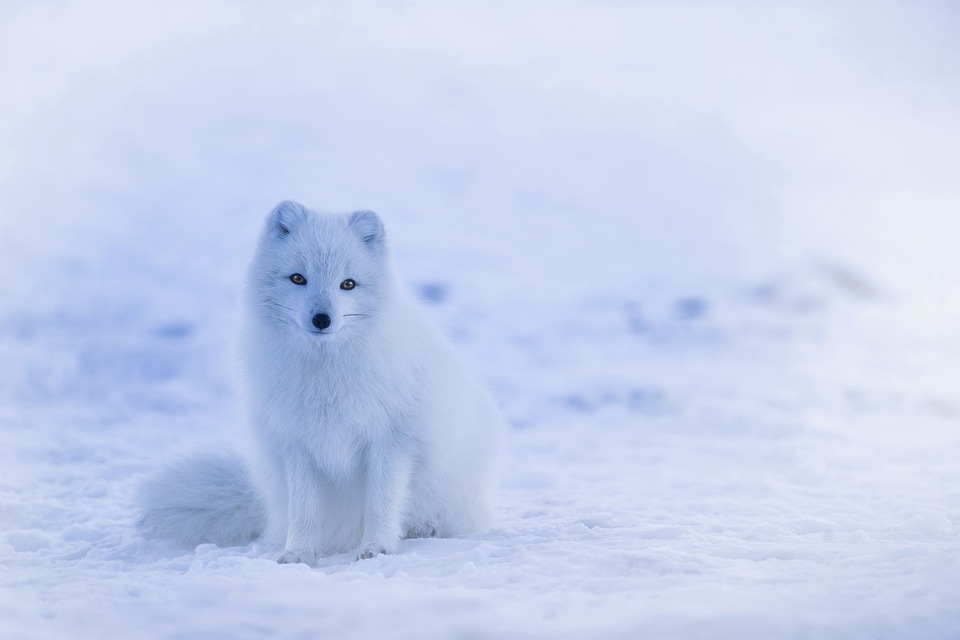

My Favorite Animal

The picture above is of an Arctic Fox. Artic Foxes are very unique in that the survive in very cold places where
there aren't many of the pray foxes normally hunt. They have to burrow into snow just to find the food to survive.
Back to Home Page